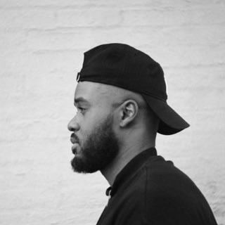

Hey, I’m Ryan! I’m a Product Designer with over nine years of experience (resume, PDF, opens in a new tab) building in healthcare, transportation logistics, and digital media.
I’ve always rooted for the underdog. I gravitate toward scrappy startups and challenger brands — taking messy, complicated software and making it feel clear, fast, and easy to use.
Lately, I’ve been launching independent projects, including Blackradio. It’s my playground for curiosity, craft, and testing the edges of what’s possible.
My process starts with curiosity. I spend just as much time thinking about backend engineering and business outcomes as I do visual affordances.
Traditional wireframes might be close to extinction, but going wide on an idea still matters. I work closely with subject matter experts to map out a product’s connective tissue, then move quickly into interactive prototypes so teams can test real behavior and not theoretical outcomes.
Deep conversations with an LLM never hurt either.
Curiosity doesn’t clock out when the laptop closes. I’m always digging into new records, books, and podcasts to keep things fresh. Here’s a look at what currently has my attention.
Ryan McCaulskyProduct DesignerThe Bronx, NY